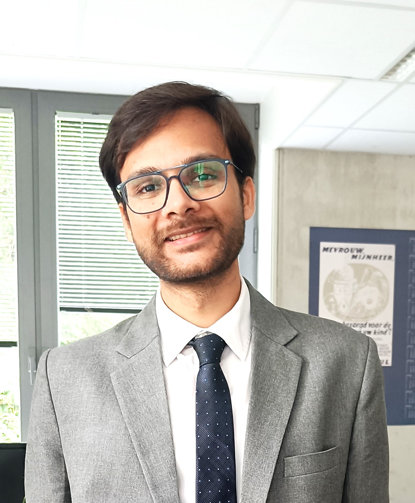

Piyush Kumar Sharma
Research Fellow | CSE Department | University of Michigan
Email: piyushks@umich.edu
I am in the academic job market!
My research broadly encompasses security, systems, and networks. Specifically, I develop frameworks, perform large-scale measurements, and build systems for deploying and facilitating the use of privacy-enhancing technologies to safeguard user privacy.
I am currently working as a senior research fellow at the University of Michigan with Prof. Roya Ensafi. Earlier, I worked as a Postdoctoral researcher at COSIC, KU Leuven, in Belgium, with Prof. Claudia Diaz. I completed my PhD from IIIT Delhi, India with the thesis titled 'Building Performant, Privacy-enhancing and Blocking-resistant Communication Systems'
Latest News
- [November 2024] Two papers accepted at NDSS 2025.
- [July 2024] Excited to obtain the FOCI Rising Star Award 2024.
- [February 2024] Presented our work LARMix at NDSS symposium 2024.
- [December 2023] Delivered an invited talk about my work on Internet shutdowns at Splintercon
- [September 2023] Paper accepted at ACM IMC 2023
Publications
- LAMP: Lightweight Approaches for Latency Minimization in Mixnets with Practical Deployment Considerations
Mahdi Rahimi, Piyush Kumar Sharma and Claudia Diaz
To appear in proceedings of Network and Distributed System Security Symposium (NDSS) 2025 - The Discriminative Power of Cross-layer RTTs in Fingerprinting Proxy Traffic
Diwen Xue, Robert Stanley, Piyush Kumar Sharma and Roya Ensafi
To appear in proceedings of Network and Distributed System Security Symposium (NDSS) 2025 - LARMix: Latency-Aware Routing in Mix Networks [link]
Mahdi Rahimi, Piyush Kumar Sharma and Claudia Diaz
In proceedings of Network and Distributed System Security Symposium (NDSS) 2024 - PTPerf: On the Performance Evaluation of Tor Pluggable Transports [link]
Zeya Umayya, Dhruv malik, Devashish Gosain and Piyush Kumar Sharma
In proceedings of ACM Internet Measurement Conference (IMC) 2023 - On the Anonymity of Peer-To-Peer Network Anonymity Schemes Used by Cryptocurrencies [link]
Piyush Kumar Sharma, Devashish Gosain and Claudia Diaz
In proceedings of Network and Distributed System Security Symposium (NDSS) 2023 - Dolphin: A Cellular Voice Based Internet Shutdown Resistance System [link]
Piyush Kumar Sharma, Rishi Sharma, Kartikey Singh, Mukulika Maity and Sambuddho Chakravarty
In proceedings of Privacy Enhancing Technologies Symposium (PETS) 2023 - Camoufler: Accessing The Censored Web By Utilizing Instant Messaging Channels [link]
Piyush Kumar Sharma, Devashish Gosain, Sambuddho Chakravarty
In Proceedings of ACM Asia Conference on Communication and Computer Security (AsiaCCS 2021). - The Road Not Taken: Re-thinking the Feasibility of Voice Calling Over Tor [link]
Piyush Kumar Sharma, Shashwat Chaudhary*, Nikhil Hassija*, Mukulika Maity, and Sambuddho Chakravarty
In Proceedings of Privacy Enhancing Technologies Symposium (PETS 2020). (* Equal contribution of authors) - SiegeBreaker: An SDN Based Practical Decoy Routing System [link]
Piyush Kumar Sharma, Devashish Gosain, Himanshu Sagar, Chaitanya Kumar, Aneesh Dogra, Vinayak Naik, H.B. Acharya, and Sambuddho Chakravarty
In Proceedings of Privacy Enhancing Technologies Symposium (PETS 2020). - Maginot Lines and Tourniquets: On the Defendability of National Cyberspace [link]
Devashish Gosain, Madhur Rawat, Piyush Kumar Sharma, H.B. Acharya
In proceedings of Local Computer Networks (LCN Symposium 2020). - Where The Light Gets In: Analyzing Web Censorship Mechanisms in India [link]
Tarun Kumar Yadav*, Akshat Sinha*, Devashish Gosain*, Piyush Kumar Sharma, Sambuddho Chakravarty
In proceedings of ACM Internet Measurement Conference (IMC 2018). (*Shared First Authorship) - SiegeBreaker: SDN Based Decoy Routing System [link]
Piyush Kumar Sharma, Chaitanya Kumar, Aneesh Dogra, Vinayak Naik, H.B. Acharya, Sambuddho Chakravarty
WIP published in ACSAC 2017.
Academic Service
- PC 2025: Usenix Security, PETS, Euro S&P, TheWebConf (formerly WWW)
- PC 2024: CCS, PETS, TheWebConf (formerly WWW), WiSec, FOCI
- PC 2023: PETS
- PC 2022: ESORICS
- External Reviewer: PETS 2022, PETS 2021
Teaching
- FALL 2023 - Delivered a lecture on VPNs as part of the Privacy Technologies course at KU Leuven
- WINTER 2023 - Co-taught Advanced Privacy Technologies course at KU Leuven
- FALL 2022 - Taught the complete course and lectures for Privacy Technologies and co-taught Privacy and Big Data course at KU Leuven
- FALL 2021 - Took lecture on Censorship and Anti-censorship technologies for the Privacy Technologies course at KU Leuven